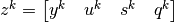
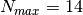

Concepts and Algorithms¶
This chapter presents the optimal control problem and concepts,. It begins with a formal mathematical description of the problem and documents the notation selected for this work (based on Bett’s notation). We provide practical discussion of the discretization of the optimal control problem using collocation, the concept of a “Trajectory”, and the concept of a “Phase”. Trajectory and Phase are the two primary Resources that the user employs to solve problems using collocation in GMAT.
The Optimal Control Problem¶
The optimal control problem, expressed in words, is the problem of finding a control and state history that minimizes a cost function (mass, time, money, etc.) subject to a set of dynamics and constraints. In mathematical form, the problem can be written as: Minimize the following cost function (written in what is called the Bolza form):
subject to the dynamics constraints
the algebraic path constraints
and the boundary conditions 
In this work, we will employ notation based on the work of Betts, where the definitions in Table 10 apply :
Term |
Symbol |
Description |
|---|---|---|
Trajectory |
N/A |
Container of phases and how they are linked together |
Phase |
N/A |
A segment of a trajectory that is modeled with a single dynamics model. When dynamics models must change, multiple phases are required. |
Phase index |
k |
Phase is a sub-segment of the problem governed by dynamics potentially different from other phases of the problem. Not all problems require multiple phases, but many do. For a Lunar transfer orbit problem, we may have three phases: the escape trajectory near Earth, the trajectory from the lunar Sphere of Influence (SOI) to periapsis, and the trajectory in lunar orbit. |
State vector |
y |
State component whose time evolutions is governed by ordinary differential equations. For orbit problems, this may be x, y, z, vx, yv, vz, mass. |
Control vector |
u |
Control vector. For orbit problems, usually the thrust acceleration or . |
Static parameter |
s |
Static optimization parameters that are NOT governed by differential equations. |
Cost function |
J |
The function to be minimized or maximized. |
Algebraic path constraints |
g |
A constraint that must be satisfied at all quadrature points. These constraints can be expressed as an algebraic function of the optimization parameters and constants. |
Boundary constraint |
|
A constraint that must be satisfied at a phase boundary. These constraints can be expressed as an algebraic function of the optimization parameters and constants. An example could be that at the end of phase 2, the spacecraft must be at a periapsis (one constraint), and that the radius must be greater than 10,000 km (a second constraint). |
Linkage constraint |
A constraint that determines state continuity (or discontinuity) at the joint of two phases. |
|
Decision vector |
A vector containing all optimization parameters for a given optimal control problem discretization. It is organized in subvectors for each phase. , where |
|
Decision vector sub-vector |
The sub-vector of of decision variables that are associated with the “kth” phase. . Note that is a vector containing states at all mesh/stage points in the phase. So, for example, has length of approximately . The lengths of each sub-vector in each phase are NOT necessarily the same. The user selects the number of mesh points. The actual mesh point locations are then determined by the transcription. |
 is the number of phases.
is the number of phases.CSALT Algorithms¶
CSALT employs collocation to solve the optimal control problem. Collocation converts an optimal control problem into a large, sparse Non-Linear Programming (NLP) [Nocedal, 2006] problem. The differential equations in the optimal control problem are converted to a set of differential algebraic equations whose solution approximates the solution to the differential equations. The approximation accuracy is governed by the transcription (how the differential equations are expressed as a system of algebraic equations) and how accurately those equations are solved. CSALT employs both low- and high-order transcriptions that are all implicit integration schemes. The transcriptions currently supported are Hermite-Simpson, Lobatto IIIa [Betts,2016] methods of order 4, 6, and 8, and Radau orthogonal collocation of user-specified order [Patterson, 2014]. CSALT casts all transcriptions in the form proposed by Betts (Practical Methods for Optimal Control …, pg. 146):
(1)¶
where  and are constant matrices dependent on the transcription,
and are constant matrices dependent on the transcription,  is the decision vector, is the vector of NLP functions, and
is the decision vector, is the vector of NLP functions, and  is the vector of optimal control functions evaluated at the discretization points. The system currently supports Mayer-, Lagrange-, or Bolza-form cost functions, algebraic path constraints, and algebraic point constraints. Optimization parameters include state, control, and time parameters.
is the vector of optimal control functions evaluated at the discretization points. The system currently supports Mayer-, Lagrange-, or Bolza-form cost functions, algebraic path constraints, and algebraic point constraints. Optimization parameters include state, control, and time parameters.
Derivatives and Sparsity Determination¶
Sparse derivatives are supplied to the NLP solver by differentiating Eq. (1), resulting in
The derivatives are computed using sparse matrix representations of the arrays, where the optimal control problem derivatives can optionally be provided by the user. If some or all of the optimal control derivatives are not provided, CSALT performs finite differencing of the optimal control functions.
NLP sparsity is determined using

where the sparsity of the user’s optimal control functions are determined by randomly varying the decision variables within the user-defined bounds on those variables. In addition, GMAT Optimal Control implements analytical sparsity pattern determination for the partial derivatives of state variable derivatives with respect to state variables and control variables.
Mesh Refinement¶
Currently, CSALT supports mesh refinement for the Radau orthogonal collocation method. The role of the mesh-refinement algorithm is to apply proper changes to the discretization (i.e., the length of the mesh interval and the degree of the approximating polynomial) in order to satisfy the user-defined tolerance on the relative collocation error. The relative collocation error represents the quality of the collocated solution, and the mesh-refinement algorithm estimates the relative collocation error as the difference between the approximating polynomials and the quadrature integration results of the dynamics functions. The required polynomial degree of a mesh interval is obtained as follows:
where is the current polynomial degree after the -th mesh refinement, is the required polynomial degree change,  is the collocation error tolerance, is the maximum number of mesh refinement iterations, and is the current estimate of relative collocation error. In addition, there are static tuning parameters and of the mesh refinement algorithm that define the boundaries of the polynomial degree such that:
is the collocation error tolerance, is the maximum number of mesh refinement iterations, and is the current estimate of relative collocation error. In addition, there are static tuning parameters and of the mesh refinement algorithm that define the boundaries of the polynomial degree such that:
CSALT adopts , and . If , the degree of the polynomial is updated using
If , the mesh refinement algorithm divides the mesh interval into subintervals having . The number of subintervals is given as follows:
A Note on Optimization¶
The NLP solver used by CSALT does not enforce that all constraints be satisfied at every evaluation of the user path and point functions until convergence is achieved. This feature allows for the NLP solver to “explore” the solution space. However, this feature may cause problems if there exists the possibility for encountering numerical difficulties in user path/point functions for certain values of decision variables. For example, in GMAT, there are atmospheric models that can only be evaluated in certain altitude ranges (e.g., altitudes greater than 100 km). An exception will be thrown and optimization will cease if a user path/point function attempts to evaluate at an invalid altitude. Other similar cases may exist, and the user must select their problem setup carefully to avoid such issues.